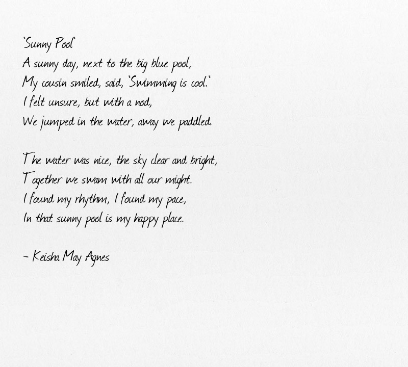

About
A little bit of information about me
Basic Information
- Grade & Section: 12 HUMSS A&B
- Age: 18
- Gender: Female
- Hobbies: Swimming, coloring, and playing visual novels.
- Email: myfavisartemis@gmail.com
School Information

St. Peter Velle Technical Training Center: A Beacon of Learning in Valenzuela, Philippines
Established on September 21, 2003, the St. Peter Velle Technical Training Center in Valenzuela, Philippines, has been a hub for vocational education and training. The center received significant recognition from the Technical Education and Skills Development Authority (TESDA) in 2007, marking it as a premier institution for learning.
The center initially offered three courses: Beauty Care, Bookkeeping, and Computer Operations. Over the years, it has expanded its curriculum to include a variety of other courses such as Automotive Repair and Beverage Making.
In 2017, the center broadened its educational offerings to include Senior High School programs. These programs encompass various strands including Humanities and Social Sciences (HUMSS), Accountancy, Business, and Management (ABM), General Academic Strand (GAS), and Home Economics (H.E). Additionally, Technical-Vocational-Livelihood (TVL) courses such as Information Technology (IT) and Automotive are also available.
Prospective students interested in enrolling in college or vocational courses must be over 18 years old and have completed high school. Required documents for admission include a student ID, transcript of records (TOR), and a Senior High School card, among others.
Located at No. 92 P. McArthur Highway, Marulas, the St. Peter Velle Technical Training Center is committed to enhancing job skills. Some of the courses offered can take up to 1,100 hours to complete, ensuring comprehensive and in-depth training for all students.
Contact them here:
Creative Writing
Creative Writing, a key component of the Humanities and Social Sciences (HUMSS) strand, is a unique class that guides you on the art of storytelling. Prior knowledge of 21st-century literature is recommended before embarking on this journey.
Unlike traditional academic writing, this class encourages you to tap into your imagination, bringing an added dimension to your writing. You will learn to breathe life into your stories, crafting vivid descriptions that transport readers into the world you’ve created.
The course introduces you to various writing techniques, such as painting pictures with words and using language in innovative ways. You will study the works of renowned local and international authors, including Jose Dalisay Jr. and J.K. Rowling, drawing inspiration from their mastery of the craft.
The class provides you with the opportunity to pen your own narratives, starting with short stories. You will learn to refine your work based on feedback, honing your skills in revision and editing. The course goes beyond storytelling, also covering the creation of diverse forms of poetry.
Ideal for anyone with a passion for crafting stories, poems, and plays, this class equips you with the skills to create compelling narratives and characters. Whether you aspire to write for leisure or envision a career in writing, this course lays the foundation for your literary journey.
Poem

The Tune Played On That Day
In the art classroom, Arisa stood still with her painting before her—a landscape that was meant to be full of life. But Mr. Sato’s words cut through the silence, sharp and unforgiving. “This isn’t art; it’s just paint on a canvas. Where’s the feeling? Where’s the story?” His voice boomed, making Arisa’s heart sink. She could feel her classmates’ eyes on her as they whispered. As Mr. Sato’s harsh words hung in the air, Arisa thought about her father, lying in a hospital bed. She remembered the critics at his last show, their words as sharp as Mr. Sato’s, and the sinking feeling that it was her suggestions that had led him there. Even when she ran away from home to forget what happened, she felt like the past was still following her.
At lunch, Arisa heard the whispers about Ohirume Kuro, also known as “Miss Perfect,” who got top marks and got into a famous school. Arisa wondered what it was like to be so perfect. Following a sad piano tune, filled with longing and yet warm, Arisa found Ohirume in the music room. The rain tapped on the windows, but inside, it was just them and the music. Ohirume looked like a goddess, and Arisa felt a rush of warmth and wonder. It was like seeing someone who stood out without even trying. Arisa, who always doubted herself, was amazed by Ohirume’s talent.
As they started spending time together, Arisa realized that Ohirume’s perfection was a facade. She was just trying to meet everyone’s high expectations. Arisa wanted to get to know the real Ohirume, the girl behind the perfect image. Little by little, as they hung out, Arisa noticed the small things that showed Ohirume’s true feelings. The way her laughter seemed forced, the sadness in her eyes, and the smiles that didn’t seem genuine.
After school, Ohirume’s home was quiet, too quiet. When her mother found the synthesizer, her voice was cold and hard. “What is this doing here?” she asked, her eyes narrow. “This is what I love doing, Mom,” Ohirume replied, her voice was small, her hands clasped together as if she could hold onto the music that was about to be taken from her. “Music? This is a waste of time!” her mother snapped. She grabbed the synthesizer, and she threw it to the ground. The sound of breaking plastic and snapping wires filled the room. Keys scattered across the floor, some cracked, others completely shattered, their once smooth surfaces now broken. Ohirume stood frozen, the pieces of her synthesizer spread out before her. Her mother’s footsteps echoed as she walked away, leaving Ohirume in the silence.
The days that passed were a blur for Ohirume. She moved through them like a ghost, her eyes empty. She ignored Arisa’s texts, her calls, her worried glances in the hallway. The music that had once filled her with joy was now just a memory, and without it, the world seemed colorless. Arisa couldn’t stand seeing her friend like this. She remembered her own escape, the time she ran away from home, from the guilt and sadness. She knew what it was like to feel lost.
One day, she waited for Ohirume after school. “Let’s go to the coffee shop,” she said, her voice gentle but serious. “Please.” They sat in their usual spot, the smell of coffee and chocolate around them, but the sweetness couldn’t touch the bitterness in Ohirume’s heart. They went to the arcade, where they used to laugh, but now the laughter just echoed around Ohirume, a reminder of what she’d lost. As they walked home, the streetlights were casting long shadows on the pavement. Ohirume finally shared with Arisa what had happened, her voice shaking. “My mom… she broke my synthesizer,” she said, the words caught in her throat. “It was my escape, the only thing that made me feel… me. And now it’s gone.”
Arisa stopped and looked at Ohirume, her heart aching for her friend. She wrapped her arms around Ohirume in a tight hug. “I once ran away when I was filled with guilt and the world just… seemed to be my enemy. Ohirume… It’s okay to run away… for a little while,” Arisa whispered. “It might seem like a coward’s advice, but we all get tired. You can’t keep pushing when everything feels too much. You’re not alone. I’m here, and I’ll always stay by your side.” Ohirume’s tears finally fell, and as they parted ways, Ohirume gave Arisa a small, hopeful smile. It was a smile that maybe, just maybe, things would get better.
Reflective Journal
I've learned so much in Creative Writing class! "Les Misérables" is now one of my favourite movie ever. It's so cool how a story can be so deep and still be fun to watch. Making poems was tricky at first, but now I get it, and it's pretty awesome to play with words and feelings. We learned stories from different writers. I remembered Drama Genres too, they're interested to study about. And Ms. Mhea, you're the best. Your classes are super clear, and you make everything easy to understand. I'm really glad you're my teacher. Thanks for everything!